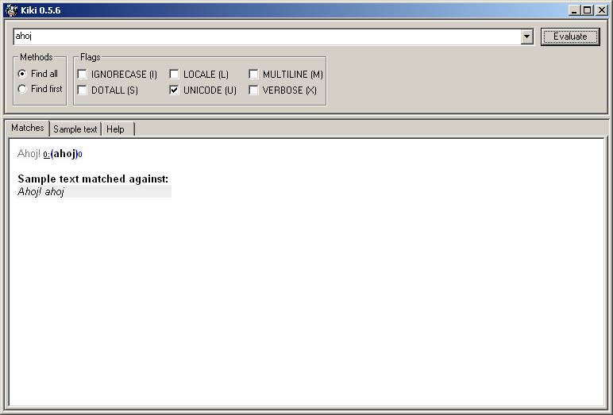
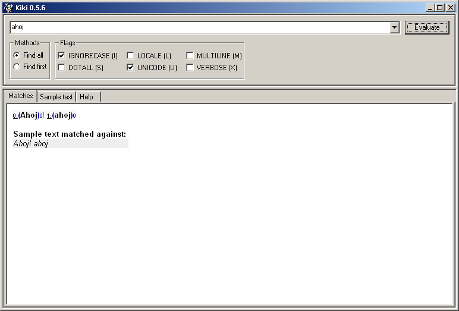
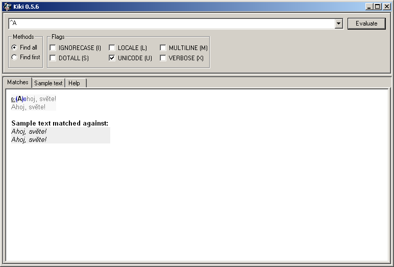
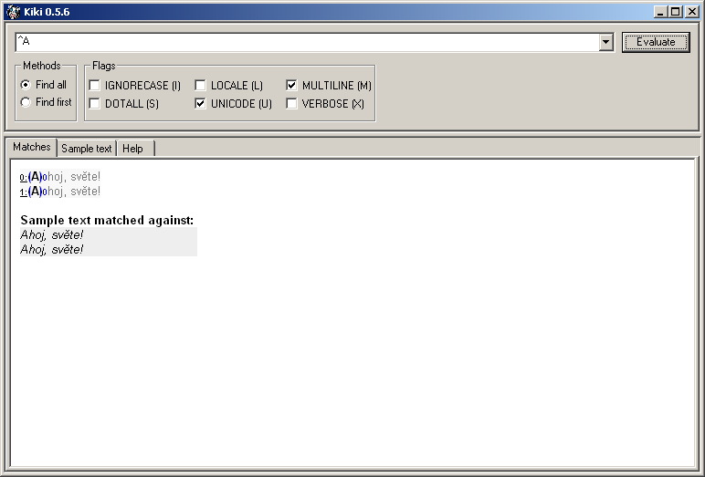
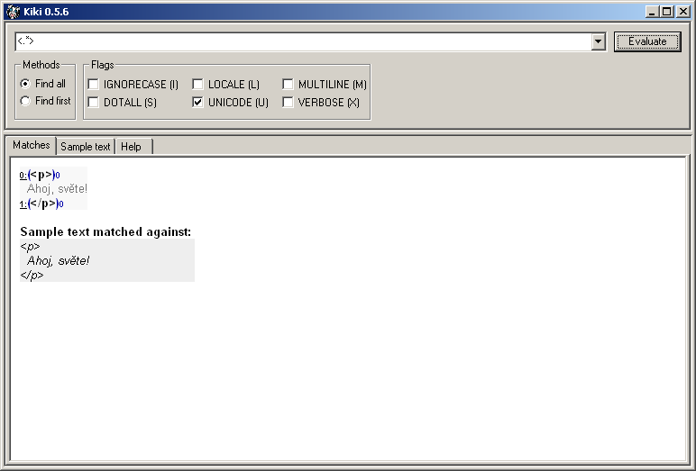
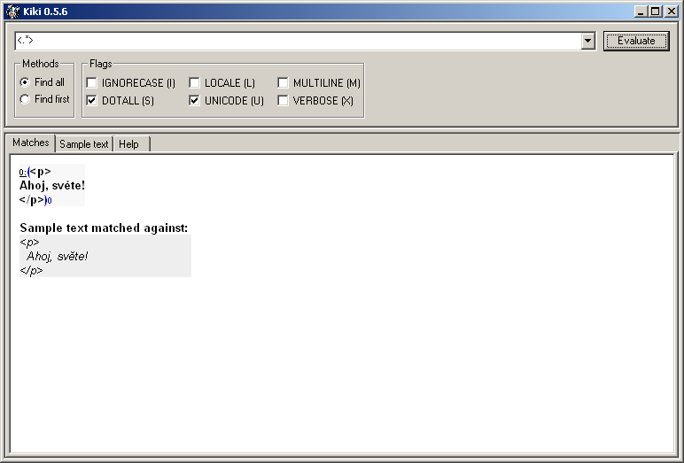
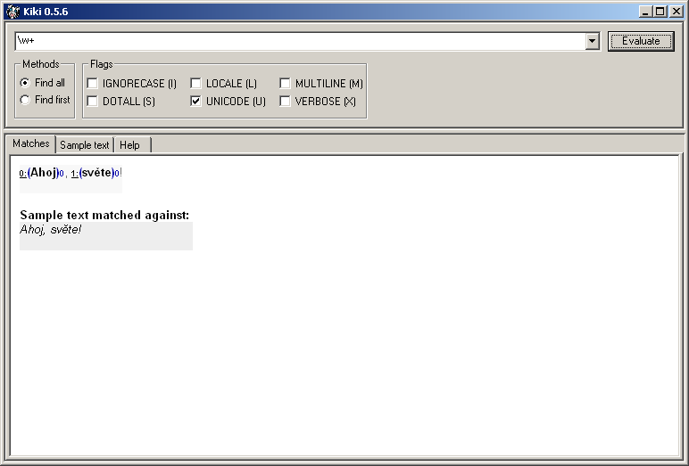
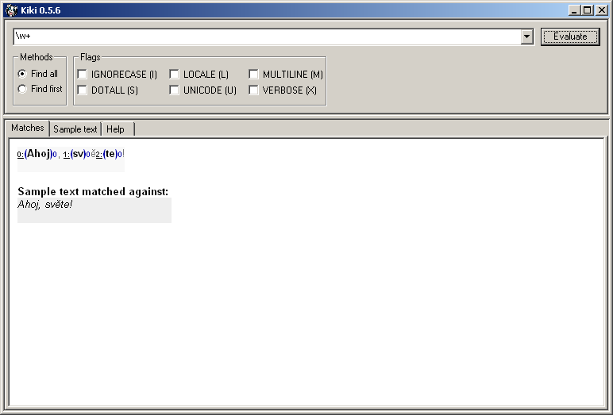

Kompilační příznaky
by Jiří Znamenáček
Úvod
Některé aspekty obecného chování regexpů je možné ovlivňovat použitím speciálních přepínačů. Klasickým příkladem budiž chování regexpů vůči velikosti písmen – v normálním nastavení jsou velká a malá písmena pochopitelně zcela rozdílné znaky (a tudíž i základní regexpy), ale je možné „přinutit“ regexpový stroj, aby je pokládal za znaky stejné.
Uvedené příznaky se dají zavést i v rámci vlastního regexpu, ale většinou se zadávají v podobě tzv. kompilačních příznaků při přípravě regexpu v příslušném regexpovém stroji. Ale ať tak nebo tak, důležité je, že se vyskytují ve dvou formách – krátké a dlouhé – a ne vždy se dají obě zaměňovat.
IGNORECASE nebo jako pouhé I, případně též i.
I – IGNORECASE
Základním a nejjednodušším příznakem je zapnutí ignorování rozdílu mezi velkými a malými písmeny.
V důsledku se zjednoduší regexpy pro vyhledávání písmen, protože z variant pro velká i malá můžete ponechat pouze jednu z nich.


M – MULTILINE
Dalším poměrně zásadním příznakem je zapnutí vyhodnocování začátků a konců řádek.
Uvedený příznak ovlivňuje metaznaky ^ pro začátek řetězce a $ pro konec řetězce, které po zapnutí MULTILINE začnou odchytávat i začátek a konec každé řádky.


S – DOTALL
Veledůležitý přepínač způsobující, že regexp . (tečka) zachytává i konce řádků, tedy opravdu všechno.


A – ASCII
V Python'u 3.x řídicí sekvence \w, \W, \b, \B, \s a \S operují automaticky na unicodových řetězcích a podle unicodových pravidel. Uvedený příznak způsobí, že se začnou chovat podle pravidel pro ASCII-řetězce.
Uvedené ASCII-chování bylo vlastně základním a málem jediným skoro celou počítačovou historii, než se začal KONEČNĚ prosazovat Unicode. Ostatně Python 2.x má místo tohoto příznaku příznak U, UNICODE s prakticky opačnou funkcionalitou, díky čemuž si chování příznaku A můžeme nasimulovat i v Kiki 0.5.6 (která je postavená nad Python'em 2.x):


X – VERBOSE
Bezpochyby velmi užitečným přepínačem při tvorbě jen trochu složitějších regexpů je možnost zápisu pomocí uvolněné syntaxe (aka verbose mode).
V tomto módu jsou v rámci regexpu ignorovány všechny bílé znaky, pokud nejsou součástí skupiny znaků [] nebo pokud nejsou uvozeny zpětným lomítkem (jehož speciální význam ovšem není zrovna dalším zpětným lomítkem zrušen).
Srovnejme tři různé způsoby zápisu stejného regexpu pro rozparsování numerické entity (např. v XML) v jazyce Python:
# vše v jednom řádku a řetězci
charref = re.compile("&#(0[0-7]+|[0-9]+|x[0-9a-fA-F]+);")
# malá pomoc s využitím automatického skládání řetězců
charref = re.compile("&#(0[0-7]+"
"|[0-9]+"
"|x[0-9a-fA-F]+);")
# pěkně naformátované a okomentované díky příznaku VERBOSE
charref = re.compile(r"""
&[#] # začátek numerické entity
(
0[0-7]+ # číslo oktalově
| [0-9]+ # číslo decimálně
| x[0-9a-fA-F]+ # číslo hexadecimálně
)
; # středník ukončující numerickou entitu
""", re.VERBOSE)
Poznámky
O nadbytečnosti příznaku U, UNICODE v Python'u 3.x, který však je z důvodů zpětné kompatibility regexpů stále k dispozici (i když pochopitelně už nic nedělá), jsme se už zmínili o pár slajdů dříve.
Ale ještě jsem zatajil existenci příznaku L, LOCALE, který podobně jako A nebo koneckonců i U ovlivňuje chování řídicích sekvencí \w, \W, \b, \B, \s a \S. Konkrétně způsobí to, že se budou řídit pravidly podle aktuálního locale. Což je ovšem natolik nespolehlivá a nepřenosná metoda, že zcela pochopitelně je jeho používání velmi nedoporučeno. Zvlášť když už v trojkovém Python'u máme KONEČNĚ k dispozici pořádnou podporu Unicodu.